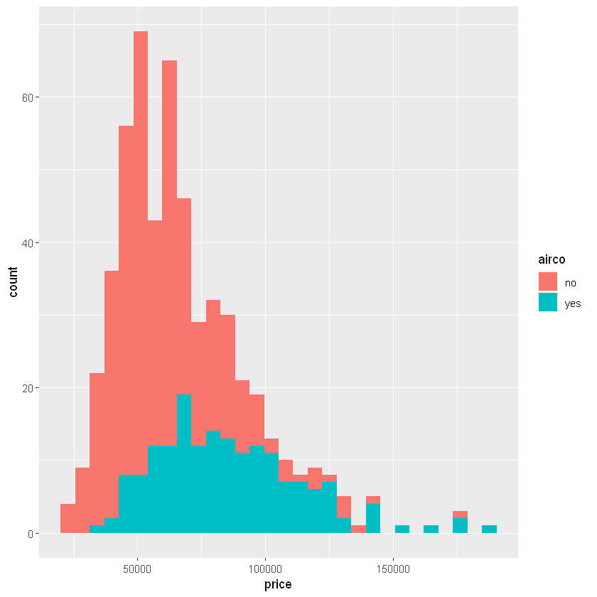
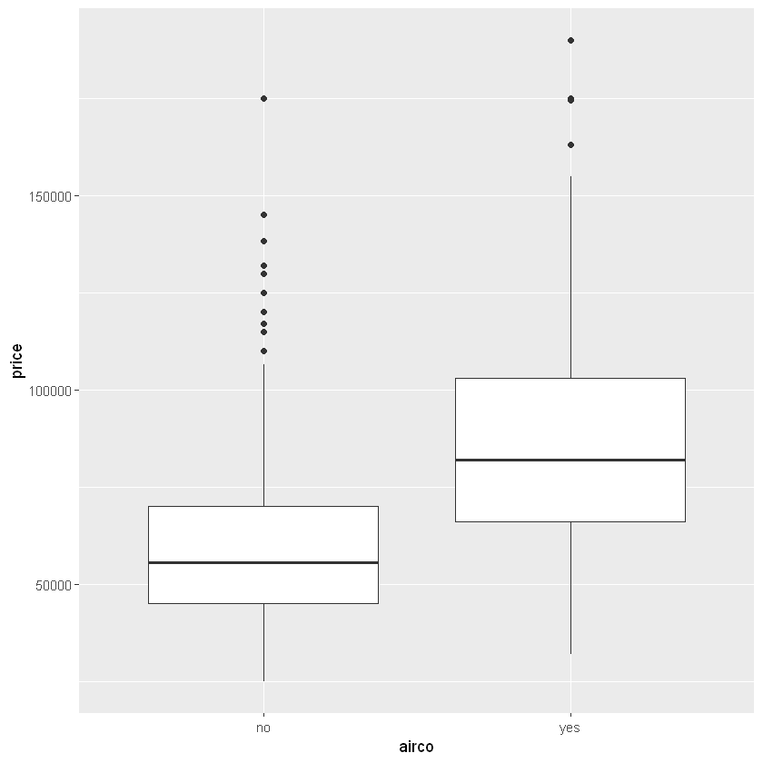
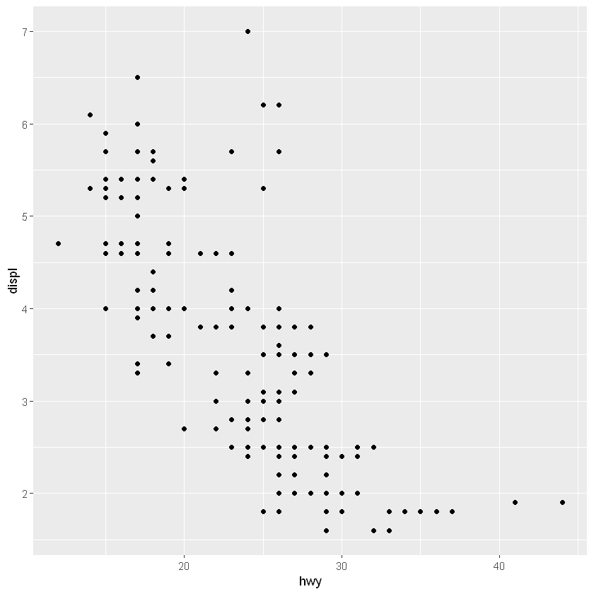
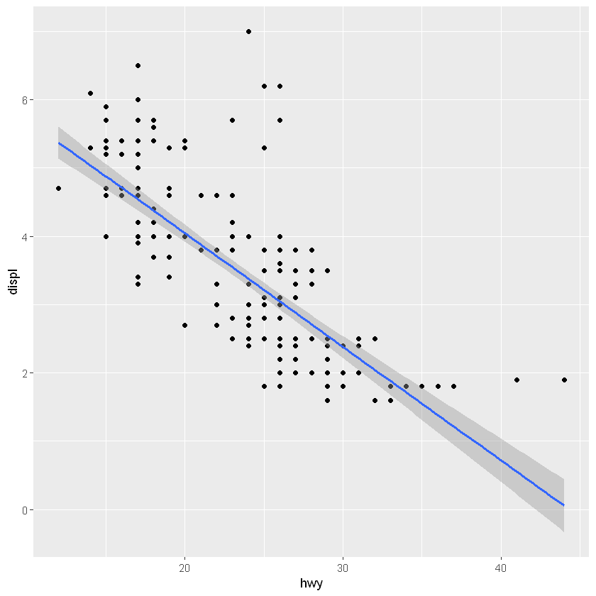

<!DOCTYPE html>

<html xmlns="http://www.w3.org/1999/xhtml">
  <head>
    <meta charset="utf-8" />
    <title>Testing R exercises &#8212; My test book</title>
    <link rel="stylesheet" href="https://cdnjs.cloudflare.com/ajax/libs/font-awesome/5.11.2/css/all.min.css" integrity="sha384-KA6wR/X5RY4zFAHpv/CnoG2UW1uogYfdnP67Uv7eULvTveboZJg0qUpmJZb5VqzN" crossorigin="anonymous">
    <link href="../_static/css/index.css" rel="stylesheet">
    <link rel="stylesheet" href="../_static/sphinx-book-theme.css" type="text/css" />
    <link rel="stylesheet" href="../_static/pygments.css" type="text/css" />
    <link rel="stylesheet" type="text/css" href="../_static/togglebutton.css" />
    <link rel="stylesheet" type="text/css" href="../_static/copybutton.css" />
    <link rel="stylesheet" type="text/css" href="../_static/mystnb.css" />
    <link rel="stylesheet" type="text/css" href="../_static/sphinx-thebe.css" />
    <link rel="stylesheet" type="text/css" href="../_static/jupyter-sphinx.css" />
    <script id="documentation_options" data-url_root="../" src="../_static/documentation_options.js"></script>
    <script src="../_static/sphinx-book-theme.js"></script>
    <script src="../_static/jquery.js"></script>
    <script src="../_static/underscore.js"></script>
    <script src="../_static/doctools.js"></script>
    <script src="../_static/language_data.js"></script>
    <script src="../_static/togglebutton.js"></script>
    <script src="../_static/clipboard.min.js"></script>
    <script src="../_static/copybutton.js"></script>
    <script src="../_static/mystnb.js"></script>
    <script src="../_static/sphinx-book-theme.js"></script>
    <script >var togglebuttonSelector = '.toggle, .admonition.dropdown, .tag_hide_input div.cell_input, .tag_hide-input div.cell_input, .tag_hide_output div.cell_output, .tag_hide-output div.cell_output, .tag_hide_cell.cell, .tag_hide-cell.cell';</script>
    <script src="https://cdnjs.cloudflare.com/ajax/libs/require.js/2.3.4/require.min.js"></script>
    <script src="https://unpkg.com/@jupyter-widgets/html-manager@^0.18.0/dist/embed-amd.js"></script>
    <script async="async" src="https://cdnjs.cloudflare.com/ajax/libs/mathjax/2.7.5/latest.js?config=TeX-AMS-MML_HTMLorMML"></script>
    <script async="async" src="https://unpkg.com/thebelab@latest/lib/index.js"></script>
    <script >
        const thebe_selector = ".thebe"
        const thebe_selector_input = "pre"
        const thebe_selector_output = ".output"
    </script>
    <script async="async" src="../_static/sphinx-thebe.js"></script>
    <link rel="index" title="Index" href="../genindex.html" />
    <link rel="search" title="Search" href="../search.html" />
    <link rel="next" title="Testing Python exercises" href="../chapter3/chapter3.html" />
    <link rel="prev" title="Testing Figure Numbering" href="../chapter1/chapter1.html" />

    <meta name="viewport" content="width=device-width, initial-scale=1">
    <meta name="docsearch:language" content="en">


  </head>
  <body data-spy="scroll" data-target="#bd-toc-nav" data-offset="80">
    

    <div class="container-xl">
      <div class="row">
          
<div class="col-12 col-md-3 bd-sidebar site-navigation show" id="site-navigation">
    
        <div class="navbar-brand-box">
<a class="navbar-brand text-wrap" href="../index.html">
  
  
  <h1 class="site-logo" id="site-title">My test book</h1>
  
</a>
</div>

<form class="bd-search d-flex align-items-center" action="../search.html" method="get">
  <i class="icon fas fa-search"></i>
  <input type="search" class="form-control" name="q" id="search-input" placeholder="Search this book..." aria-label="Search this book..." autocomplete="off" >
</form>

<nav class="bd-links" id="bd-docs-nav" aria-label="Main navigation">
  <ul class="nav sidenav_l1">
 <li class="toctree-l1">
  <a class="reference internal" href="../chapter1/chapter1.html">
   Testing Figure Numbering
  </a>
 </li>
</ul>
<ul class="current nav sidenav_l1">
 <li class="toctree-l1 current active">
  <a class="current reference internal" href="#">
   Testing R exercises
  </a>
 </li>
 <li class="toctree-l1">
  <a class="reference internal" href="../chapter3/chapter3.html">
   Testing Python exercises
  </a>
 </li>
 <li class="toctree-l1">
  <a class="reference internal" href="../chapter3/chapter3.html#section-in-chapter-shows-up-in-toc">
   Section in chapter shows up in toc
  </a>
 </li>
 <li class="toctree-l1">
  <a class="reference internal" href="../chapter3/chapter3.html#drill-3">
   DRILL 3
  </a>
 </li>
 <li class="toctree-l1">
  <a class="reference internal" href="../chapter3/chapter3.html#drill-4">
   Drill 4
  </a>
 </li>
</ul>

</nav>

 <!-- To handle the deprecated key -->

<div class="navbar_extra_footer">
  Powered by <a href="https://jupyterbook.org">Jupyter Book</a>
</div>

</div>


          


          
<main class="col py-md-3 pl-md-4 bd-content overflow-auto" role="main">
    
    <div class="row topbar fixed-top container-xl">
    <div class="col-12 col-md-3 bd-topbar-whitespace site-navigation show">
    </div>
    <div class="col pl-2 topbar-main">
        
        <button id="navbar-toggler" class="navbar-toggler ml-0" type="button" data-toggle="collapse"
            data-toggle="tooltip" data-placement="bottom" data-target=".site-navigation" aria-controls="navbar-menu"
            aria-expanded="true" aria-label="Toggle navigation" aria-controls="site-navigation"
            title="Toggle navigation" data-toggle="tooltip" data-placement="left">
            <i class="fas fa-bars"></i>
            <i class="fas fa-arrow-left"></i>
            <i class="fas fa-arrow-up"></i>
        </button>
        
        <div class="dropdown-buttons-trigger">
    <button id="dropdown-buttons-trigger" class="btn btn-secondary topbarbtn" aria-label="Download this page"><i
            class="fas fa-download"></i></button>

    
    <div class="dropdown-buttons">
        <!-- ipynb file if we had a myst markdown file -->
        
        <!-- Download raw file -->
        <a class="dropdown-buttons" href="../_sources/chapter2/chapter2.md"><button type="button"
                class="btn btn-secondary topbarbtn" title="Download source file" data-toggle="tooltip"
                data-placement="left">.md</button></a>
        <!-- Download PDF via print -->
        <button type="button" id="download-print" class="btn btn-secondary topbarbtn" title="Print to PDF"
            onClick="window.print()" data-toggle="tooltip" data-placement="left">.pdf</button>
    </div>
    
</div>
        <!-- Source interaction buttons -->


        <!-- Full screen (wrap in <a> to have style consistency -->
        <a class="full-screen-button"><button type="button" class="btn btn-secondary topbarbtn" data-toggle="tooltip"
                data-placement="bottom" onclick="toggleFullScreen()" title="Fullscreen mode"><i
                    class="fas fa-expand"></i></button></a>

        <!-- Launch buttons -->

    </div>

    <!-- Table of contents -->
    <div class="d-none d-md-block col-md-2 bd-toc show">
        <div class="tocsection onthispage pt-5 pb-3">
            <i class="fas fa-list"></i> Contents
        </div>
        <nav id="bd-toc-nav">
            
        </nav>
    </div>
</div>
    <div id="main-content" class="row">
        <div class="col-12 col-md-9 pl-md-3 pr-md-0">
        
              <div>
                
  <div class="section" id="testing-r-exercises">
<h1>Testing R exercises<a class="headerlink" href="#testing-r-exercises" title="Permalink to this headline">¶</a></h1>
<div class="highlight-R notranslate"><div class="highlight"><pre><span></span><span class="nf">library</span><span class="p">(</span><span class="n">tidyverse</span><span class="p">)</span>
</pre></div>
</div>
<div class="highlight-none notranslate"><div class="highlight"><pre><span></span>-- Attaching packages --------------------------------------- tidyverse 1.3.0 --

v ggplot2 3.3.2     v purrr   0.3.4
v tibble  3.0.3     v dplyr   1.0.2
v tidyr   1.1.2     v stringr 1.4.0
v readr   1.3.1     v forcats 0.5.0

-- Conflicts ------------------------------------------ tidyverse_conflicts() --
x dplyr::filter() masks stats::filter()
x dplyr::lag()    masks stats::lag()
</pre></div>
</div>
<div class="highlight-R notranslate"><div class="highlight"><pre><span></span><span class="nf">data</span><span class="p">(</span><span class="n">iris</span><span class="p">)</span>
<span class="nf">head</span><span class="p">(</span><span class="n">iris</span><span class="p">)</span>
</pre></div>
</div>
<div class="figure align-left" id="id1">

<p class="caption"><span class="caption-number">Fig. 4 </span><span class="caption-text">Here is my figure caption!</span><a class="headerlink" href="#id1" title="Permalink to this image">¶</a></p>
</div>
<table>
<caption>A data.frame: 6 × 5</caption>
<thead>
	<tr><th></th><th scope=col>Sepal.Length</th><th scope=col>Sepal.Width</th><th scope=col>Petal.Length</th><th scope=col>Petal.Width</th><th scope=col>Species</th></tr>
	<tr><th></th><th scope=col>&lt;dbl&gt;</th><th scope=col>&lt;dbl&gt;</th><th scope=col>&lt;dbl&gt;</th><th scope=col>&lt;dbl&gt;</th><th scope=col>&lt;fct&gt;</th></tr>
</thead>
<tbody>
	<tr><th scope=row>1</th><td>5.1</td><td>3.5</td><td>1.4</td><td>0.2</td><td>setosa</td></tr>
	<tr><th scope=row>2</th><td>4.9</td><td>3.0</td><td>1.4</td><td>0.2</td><td>setosa</td></tr>
	<tr><th scope=row>3</th><td>4.7</td><td>3.2</td><td>1.3</td><td>0.2</td><td>setosa</td></tr>
	<tr><th scope=row>4</th><td>4.6</td><td>3.1</td><td>1.5</td><td>0.2</td><td>setosa</td></tr>
	<tr><th scope=row>5</th><td>5.0</td><td>3.6</td><td>1.4</td><td>0.2</td><td>setosa</td></tr>
	<tr><th scope=row>6</th><td>5.4</td><td>3.9</td><td>1.7</td><td>0.4</td><td>setosa</td></tr>
</tbody>
</table>
<div class="highlight-R notranslate"><div class="highlight"><pre><span></span><span class="n">fit1</span> <span class="o">&lt;-</span> <span class="nf">lm</span><span class="p">(</span><span class="n">Sepal.Length</span> <span class="o">~</span> <span class="n">Petal.Width</span><span class="p">,</span> <span class="n">data</span> <span class="o">=</span> <span class="n">iris</span><span class="p">)</span>
<span class="nf">summary</span><span class="p">(</span><span class="n">fit1</span><span class="p">)</span>
</pre></div>
</div>
<div class="highlight-none notranslate"><div class="highlight"><pre><span></span>Call:
lm(formula = Sepal.Length ~ Petal.Width, data = iris)

Residuals:
     Min       1Q   Median       3Q      Max 
-1.38822 -0.29358 -0.04393  0.26429  1.34521 

Coefficients:
            Estimate Std. Error t value Pr(&gt;|t|)    
(Intercept)  4.77763    0.07293   65.51   &lt;2e-16 ***
Petal.Width  0.88858    0.05137   17.30   &lt;2e-16 ***
---
Signif. codes:  0 &#39;***&#39; 0.001 &#39;**&#39; 0.01 &#39;*&#39; 0.05 &#39;.&#39; 0.1 &#39; &#39; 1

Residual standard error: 0.478 on 148 degrees of freedom
Multiple R-squared:  0.669,	Adjusted R-squared:  0.6668 
F-statistic: 299.2 on 1 and 148 DF,  p-value: &lt; 2.2e-16
</pre></div>
</div>
<p>library(ggplot2)</p>
<p>ggplot(iris, aes(x = Petal.Width, y = Sepal.Length)) +
geom_point() +
stat_smooth(method = “lm”, col = “red”)</p>
<div class="highlight-R notranslate"><div class="highlight"><pre><span></span><span class="nf">library</span><span class="p">(</span><span class="n">readxl</span><span class="p">)</span>
<span class="n">housing</span> <span class="o">&lt;-</span> <span class="nf">read_xlsx</span><span class="p">(</span><span class="s">&quot;housing.xlsx&quot;</span><span class="p">)</span>
<span class="nf">head</span><span class="p">(</span><span class="n">housing</span><span class="p">)</span>
</pre></div>
</div>
<table>
<caption>A tibble: 6 × 13</caption>
<thead>
	<tr><th scope=col>price</th><th scope=col>lotsize</th><th scope=col>bedrooms</th><th scope=col>bathrms</th><th scope=col>stories</th><th scope=col>driveway</th><th scope=col>recroom</th><th scope=col>fullbase</th><th scope=col>gashw</th><th scope=col>airco</th><th scope=col>garagepl</th><th scope=col>prefarea</th><th scope=col>neighborhood</th></tr>
	<tr><th scope=col>&lt;dbl&gt;</th><th scope=col>&lt;dbl&gt;</th><th scope=col>&lt;dbl&gt;</th><th scope=col>&lt;dbl&gt;</th><th scope=col>&lt;dbl&gt;</th><th scope=col>&lt;chr&gt;</th><th scope=col>&lt;chr&gt;</th><th scope=col>&lt;chr&gt;</th><th scope=col>&lt;chr&gt;</th><th scope=col>&lt;chr&gt;</th><th scope=col>&lt;dbl&gt;</th><th scope=col>&lt;chr&gt;</th><th scope=col>&lt;chr&gt;</th></tr>
</thead>
<tbody>
	<tr><td>42000</td><td>5850</td><td>3</td><td>1</td><td>2</td><td>yes</td><td>no </td><td>yes</td><td>no</td><td>no </td><td>1</td><td>no</td><td>Blmngtn</td></tr>
	<tr><td>38500</td><td>4000</td><td>2</td><td>1</td><td>1</td><td>yes</td><td>no </td><td>no </td><td>no</td><td>no </td><td>0</td><td>no</td><td>SawyerW</td></tr>
	<tr><td>49500</td><td>3060</td><td>3</td><td>1</td><td>1</td><td>yes</td><td>no </td><td>no </td><td>no</td><td>no </td><td>0</td><td>no</td><td>SawyerW</td></tr>
	<tr><td>60500</td><td>6650</td><td>3</td><td>1</td><td>2</td><td>yes</td><td>yes</td><td>no </td><td>no</td><td>no </td><td>0</td><td>no</td><td>NWAmes </td></tr>
	<tr><td>61000</td><td>6360</td><td>2</td><td>1</td><td>1</td><td>yes</td><td>no </td><td>no </td><td>no</td><td>no </td><td>0</td><td>no</td><td>Blmngtn</td></tr>
	<tr><td>66000</td><td>4160</td><td>3</td><td>1</td><td>1</td><td>yes</td><td>yes</td><td>yes</td><td>no</td><td>yes</td><td>0</td><td>no</td><td>Gilbert</td></tr>
</tbody>
</table>
<div class="highlight-R notranslate"><div class="highlight"><pre><span></span><span class="nf">t.test</span><span class="p">(</span><span class="n">price</span> <span class="o">~</span> <span class="n">airco</span><span class="p">,</span> <span class="n">data</span><span class="o">=</span><span class="n">housing</span><span class="p">)</span>
</pre></div>
</div>
<div class="highlight-none notranslate"><div class="highlight"><pre><span></span>	Welch Two Sample t-test

data:  price by airco
t = -10.699, df = 265.03, p-value &lt; 2.2e-16
alternative hypothesis: true difference in means is not equal to 0
95 percent confidence interval:
 -30779.85 -21211.62
sample estimates:
 mean in group no mean in group yes 
         59884.85          85880.59 
</pre></div>
</div>
<div class="highlight-R notranslate"><div class="highlight"><pre><span></span><span class="c1"># Overlaid histograms</span>
<span class="nf">ggplot</span><span class="p">(</span><span class="n">housing</span><span class="p">,</span> <span class="nf">aes</span><span class="p">(</span><span class="n">x</span><span class="o">=</span><span class="n">price</span><span class="p">,</span> <span class="n">fill</span><span class="o">=</span><span class="n">airco</span><span class="p">))</span> <span class="o">+</span>
  <span class="nf">geom_histogram</span><span class="p">()</span>
</pre></div>
</div>
<div class="highlight-none notranslate"><div class="highlight"><pre><span></span>`stat_bin()` using `bins = 30`. Pick better value with `binwidth`.
</pre></div>
</div>
<p></p>
<div class="highlight-R notranslate"><div class="highlight"><pre><span></span><span class="c1"># Overlaid histograms</span>
<span class="nf">ggplot</span><span class="p">(</span><span class="n">housing</span><span class="p">,</span> <span class="nf">aes</span><span class="p">(</span><span class="n">x</span><span class="o">=</span><span class="n">price</span><span class="p">,</span><span class="n">fill</span><span class="o">=</span><span class="n">airco</span><span class="p">))</span> <span class="o">+</span>
  <span class="nf">geom_histogram</span><span class="p">()</span>
</pre></div>
</div>
<div class="highlight-none notranslate"><div class="highlight"><pre><span></span>`stat_bin()` using `bins = 30`. Pick better value with `binwidth`.
</pre></div>
</div>
<p></p>
<div class="highlight-R notranslate"><div class="highlight"><pre><span></span><span class="nf">ggplot</span><span class="p">(</span><span class="n">housing</span><span class="p">,</span> <span class="nf">aes</span><span class="p">(</span><span class="n">x</span><span class="o">=</span><span class="n">airco</span><span class="p">,</span> <span class="n">y</span><span class="o">=</span><span class="n">price</span><span class="p">))</span> <span class="o">+</span> 
  <span class="nf">geom_boxplot</span><span class="p">()</span>
</pre></div>
</div>
<p></p>
<div class="highlight-R notranslate"><div class="highlight"><pre><span></span><span class="nf">head</span><span class="p">(</span><span class="n">mpg</span><span class="p">)</span>
</pre></div>
</div>
<table>
<caption>A tibble: 6 × 11</caption>
<thead>
	<tr><th scope=col>manufacturer</th><th scope=col>model</th><th scope=col>displ</th><th scope=col>year</th><th scope=col>cyl</th><th scope=col>trans</th><th scope=col>drv</th><th scope=col>cty</th><th scope=col>hwy</th><th scope=col>fl</th><th scope=col>class</th></tr>
	<tr><th scope=col>&lt;chr&gt;</th><th scope=col>&lt;chr&gt;</th><th scope=col>&lt;dbl&gt;</th><th scope=col>&lt;int&gt;</th><th scope=col>&lt;int&gt;</th><th scope=col>&lt;chr&gt;</th><th scope=col>&lt;chr&gt;</th><th scope=col>&lt;int&gt;</th><th scope=col>&lt;int&gt;</th><th scope=col>&lt;chr&gt;</th><th scope=col>&lt;chr&gt;</th></tr>
</thead>
<tbody>
	<tr><td>audi</td><td>a4</td><td>1.8</td><td>1999</td><td>4</td><td>auto(l5)  </td><td>f</td><td>18</td><td>29</td><td>p</td><td>compact</td></tr>
	<tr><td>audi</td><td>a4</td><td>1.8</td><td>1999</td><td>4</td><td>manual(m5)</td><td>f</td><td>21</td><td>29</td><td>p</td><td>compact</td></tr>
	<tr><td>audi</td><td>a4</td><td>2.0</td><td>2008</td><td>4</td><td>manual(m6)</td><td>f</td><td>20</td><td>31</td><td>p</td><td>compact</td></tr>
	<tr><td>audi</td><td>a4</td><td>2.0</td><td>2008</td><td>4</td><td>auto(av)  </td><td>f</td><td>21</td><td>30</td><td>p</td><td>compact</td></tr>
	<tr><td>audi</td><td>a4</td><td>2.8</td><td>1999</td><td>6</td><td>auto(l5)  </td><td>f</td><td>16</td><td>26</td><td>p</td><td>compact</td></tr>
	<tr><td>audi</td><td>a4</td><td>2.8</td><td>1999</td><td>6</td><td>manual(m5)</td><td>f</td><td>18</td><td>26</td><td>p</td><td>compact</td></tr>
</tbody>
</table>
<div class="highlight-R notranslate"><div class="highlight"><pre><span></span><span class="nf">names</span><span class="p">(</span><span class="n">mpg</span><span class="p">)</span>
</pre></div>
</div>
<style>
.list-inline {list-style: none; margin:0; padding: 0}
.list-inline>li {display: inline-block}
.list-inline>li:not(:last-child)::after {content: "\00b7"; padding: 0 .5ex}
</style>
<ol class=list-inline><li>'manufacturer'</li><li>'model'</li><li>'displ'</li><li>'year'</li><li>'cyl'</li><li>'trans'</li><li>'drv'</li><li>'cty'</li><li>'hwy'</li><li>'fl'</li><li>'class'</li></ol>
<div class="highlight-R notranslate"><div class="highlight"><pre><span></span><span class="c1"># Scatterplot</span>
<span class="nf">ggplot</span><span class="p">(</span><span class="n">data</span><span class="o">=</span><span class="n">mpg</span><span class="p">,</span> <span class="nf">aes</span><span class="p">(</span><span class="n">x</span><span class="o">=</span><span class="n">hwy</span><span class="p">,</span> <span class="n">y</span><span class="o">=</span><span class="n">displ</span><span class="p">))</span> <span class="o">+</span>
    <span class="nf">geom_point</span><span class="p">()</span> 
</pre></div>
</div>
<p></p>
<div class="highlight-R notranslate"><div class="highlight"><pre><span></span><span class="n">mpg_reg</span> <span class="o">&lt;-</span> <span class="nf">lm</span><span class="p">(</span><span class="n">displ</span> <span class="o">~</span> <span class="n">hwy</span><span class="p">,</span> <span class="n">data</span><span class="o">=</span><span class="n">mpg</span><span class="p">)</span>
<span class="nf">summary</span><span class="p">(</span><span class="n">mpg_reg</span><span class="p">)</span>
</pre></div>
</div>
<div class="highlight-none notranslate"><div class="highlight"><pre><span></span>Call:
lm(formula = displ ~ hwy, data = mpg)

Residuals:
    Min      1Q  Median      3Q     Max 
-1.4126 -0.5710 -0.1105  0.4571  3.6212 

Coefficients:
             Estimate Std. Error t value Pr(&gt;|t|)    
(Intercept)  7.367570   0.221422   33.27   &lt;2e-16 ***
hwy         -0.166201   0.009157  -18.15   &lt;2e-16 ***
---
Signif. codes:  0 &#39;***&#39; 0.001 &#39;**&#39; 0.01 &#39;*&#39; 0.05 &#39;.&#39; 0.1 &#39; &#39; 1

Residual standard error: 0.8323 on 232 degrees of freedom
Multiple R-squared:  0.5868,	Adjusted R-squared:  0.585 
F-statistic: 329.5 on 1 and 232 DF,  p-value: &lt; 2.2e-16
</pre></div>
</div>
<div class="highlight-R notranslate"><div class="highlight"><pre><span></span><span class="c1"># Add regression line</span>
<span class="nf">ggplot</span><span class="p">(</span><span class="n">data</span><span class="o">=</span><span class="n">mpg</span><span class="p">,</span> <span class="nf">aes</span><span class="p">(</span><span class="n">x</span><span class="o">=</span><span class="n">hwy</span><span class="p">,</span> <span class="n">y</span><span class="o">=</span><span class="n">displ</span><span class="p">))</span> <span class="o">+</span>
    <span class="nf">geom_point</span><span class="p">()</span> <span class="o">+</span>    
    <span class="nf">geom_smooth</span><span class="p">(</span><span class="n">method</span><span class="o">=</span><span class="n">lm</span><span class="p">)</span>   
</pre></div>
</div>
<div class="highlight-none notranslate"><div class="highlight"><pre><span></span>`geom_smooth()` using formula &#39;y ~ x&#39;
</pre></div>
</div>
<p></p>
<!--stackedit_data:
eyJoaXN0b3J5IjpbLTEyODQyMjY5NTNdfQ==
--></div>

    <script type="text/x-thebe-config">
    {
        requestKernel: true,
        binderOptions: {
            repo: "binder-examples/jupyter-stacks-datascience",
            ref: "master",
        },
        codeMirrorConfig: {
            theme: "abcdef",
            mode: "python"
        },
        kernelOptions: {
            kernelName: "python3",
            path: "./chapter2"
        },
        predefinedOutput: true
    }
    </script>
    <script>kernelName = 'python3'</script>

              </div>
              
        </div>
    </div>
    
    
    <div class='prev-next-bottom'>
        
    <a class='left-prev' id="prev-link" href="../chapter1/chapter1.html" title="previous page">Testing Figure Numbering</a>
    <a class='right-next' id="next-link" href="../chapter3/chapter3.html" title="next page">Testing Python exercises</a>

    </div>
    <footer class="footer mt-5 mt-md-0">
    <div class="container">
      <p>
        
          By Santa Clause<br/>
        
            &copy; Copyright 2020.<br/>
      </p>
    </div>
  </footer>
</main>


      </div>
    </div>

    <script src="../_static/js/index.js"></script>
    
  </body>
</html>